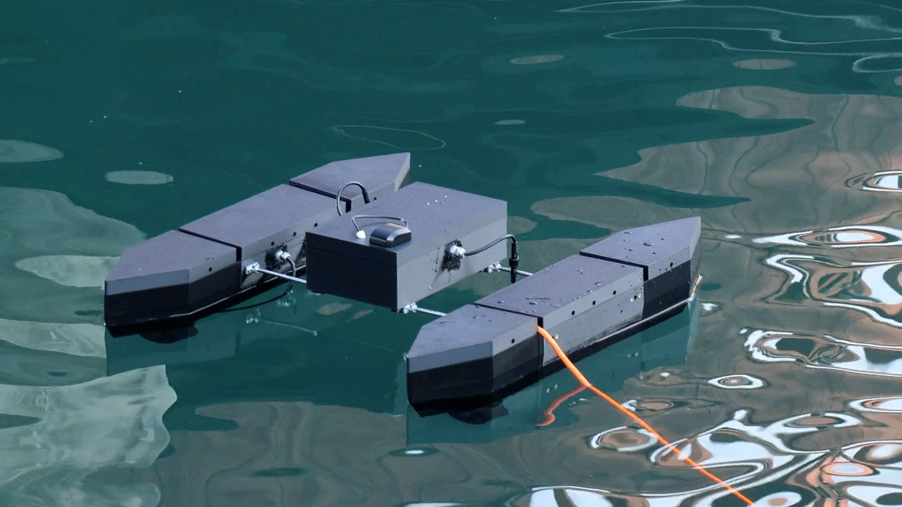

Modular hull
One Main module connects to two Sub modules. Both sides use the same 3D-printed Sub models, arranged symmetrically.
A modular surface vehicle prototype for exploring on-water robotics, distributed control and field testing.
Field-test prototype · In development
One Main module connects to two Sub modules. Both sides use the same 3D-printed Sub models, arranged symmetrically.
A Raspberry Pi, Main ESP32 and two Sub controllers bring together sensor data, RC control and propulsion over a CAN bus.
A browser-based GCS displays telemetry, supports waypoint planning and records field-test data for review.
| Length | 0.25 m |
|---|---|
| Width | 0.15 m |
| Height | 0.08 m |
| Mass | 1,190 g |
| Length | 0.65 m |
|---|---|
| Width | 0.11 m |
| Height | 0.13 m |
| Mass | 2,405 g |
| Draft | 62 mm |
| Freeboard | 70 mm |
| Reserve displacement (fully submerged) | Approx. 3.9 kg |
| Mid Length × width × height | 0.23 × 0.11 × 0.13 m |
|---|---|
| FWD / AFT Length × width × height | 0.21 × 0.11 × 0.13 m |
Each Sub consists of FWD, MID and AFT sections; the FWD and AFT designs are symmetrical.
RC control and communication between Main and Sub controllers were exercised during field testing.
Waypoint testing revealed unstable heading acquisition. Control changes need further bench and water validation before reliable autonomous operation.
Printability, enclosure sealing and sensor installation remain under development. The shared STL files are prototype designs.
Development noteV2 is an experimental prototype, not a finished or certified product.
Prototype hull STL files and weight pallet parts are being prepared for the V2 repository.
The Pi application and ESP32 operating and diagnostic sketches are being prepared for the V2 repository.
PCB manufacturing files and source CAD are not included. V2 licensing terms are being determined.
RepositoryThe V2 materials are being prepared for publication. A repository link will be added when available.
The first BN-USV prototype brought together GPS navigation, propulsion control and onboard data logging. Its field testing informed the modular V2 design.

Uses GPS and heading data to calculate the distance and direction to a target waypoint.
Turns navigation inputs into throttle and steering commands for the onboard controller.
Records position, sensor readings, control signals and battery status for review.
Reference designV1 is not a ready-to-print DIY kit. Its hull requires post-processing, bonding and waterproofing. See the V1 repository for license and assembly notes.
| Length | 0.7 m |
|---|---|
| Width | 0.15 m |
| Draft | 0.1 m |
| Mass | 2.9 kg |
| Length | 0.5 m |
|---|---|
| Width | 0.06 m |
| Draft | 0.025 m |
| Mass | 0.33 kg |
| Length | 0.7 m |
|---|---|
| Width | 0.46 m |
| Mass | 4.14 kg |
Complete assembly: central hull, two outriggers and lid.